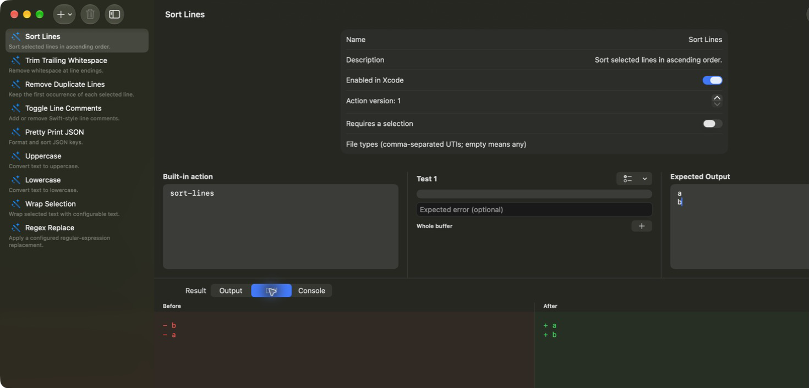

Use a familiar language to transform selected text and keep each operation reusable.
Open source · Xcode Source Editor Extension
Forge repeatable text actions for Xcode.
Write a JavaScript action once, test it locally, and run it against selected source text without leaving Xcode.

Your source text stays on your Mac.Actions execute through JavaScriptCore and receive only the selection supplied by XcodeKit. EditSmith has no network entitlement.
A programmable Xcode toolbelt
Turn editor chores into tested actions.
Verify output, selections, expected errors, diffs, and console logs before enabling an action.
Run enabled actions from Xcode's Editor menu without switching tools.
Start with sorting, whitespace cleanup, JSON formatting, and case conversion.
Action source and settings stay on the Mac and remain under your control.
A focused SwiftUI workbench backed by JavaScriptCore and XcodeKit.